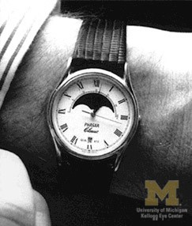
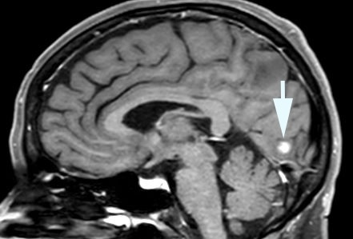

☰
Transient Vision Loss
Transient Binocular Vision Loss

What is it?
Abrupt loss of vision in both eyes that lasts from seconds to hours
Causes
Migraine
Transient ischemic attack
Seizure
Systemic hypertension or hypotension
Papilledema
How does it appear?
Migraine
Flickering zigzag (“fortification scotoma”) migrates across the visual hemifield of both eyes for 20 to 30 minutes
Visual aura often switches sides in successive attacks
Accompanying features
Headache may follow visual symptoms or be absent (“acephalgic migraine,” “migraine equivalent”)
Hemibody weakness and/or numbness or language difficulty may uncommonly occur, following each other (never concurrently!)
First migraine attack usually occurs within the first three decades of life, but…
Trap:
the first migraine attack may occur after age 50 (“late-life migraine”)
Transient ischemic attack
Stationary blank spots or flickering lights (but no zigzags) lasting less than 2 minutes
Diplopia, dizziness, dysphagia may occur

Occipital seizure
Stationary and sometimes colored flickers of variable duration
Head and eye deviation to one side sometimes
Tonic-clonic movements sometimes
Loss of consciousness (with secondary generalization of the seizure)
Structural abnormality is usually evident in the occipital lobe on brain imaging
Systemic hypertension
No distinctive accompanying features except headache
Systemic hypotension
Vision loss is triggered by standing or sitting up
History of vigorously treated hypertension
Dehydration
Lightheadedness (presyncope)
Fainting (syncope)
Papilledema
Vision loss lasting only seconds and occurring spontaneously or triggered by standing or sitting up
What else looks like it?
Patient report of “black outs” may mean loss of consciousness rather than loss of vision
What to do?
Elicit features suggesting that vision loss was binocular
Vision loss affected both eyes
Vision loss affected a temporal hemifield
Vision loss persisted with either eye closed
Elicit features that suggest migraine
Perform ophthalmoscopy to rule out papilledema
Measure blood pressure to rule out hypertension or hypotension
Refer promptly if the symptom was recent for the following evaluation
Acute phase reactants (for giant cell arteritis)
Complete blood count, protein electrophoresis (for hypercoagulable state)
Echocardiogram (for heart wall or valvular disease)
Heart rhythm monitoring (for atrial fibrillation)
MRI and MRA (for occipital mass lesions, recent stroke, and vasculopathy)
What will happen?
Migraine
Preventive treatment is usually not necessary
Stopping smoking reduces the risk of stroke
Lowering the dose of estrogen in birth control pills may reduce the risk of stroke
Transient ischemic attack
Diagnosis of atrial fibrillation is most important to reduce stroke risk
Standard stroke risk reduction measures must be instituted
Seizure
Brain MRI usually shows a pertinent structural abnormality
Electroencephalography may show interictal abnormalities
Systemic hypertension
Blood pressure must be controlled, but not excessively
Systemic hypotension
Anti-hypertensive medication regimen may need modification
Cardiac output must be optimized
Hydration may be helpful
Papilledema
Cause of elevated intracranial pressure must be sought
Transient Vision Loss
Transient Monocular Vision Loss
Transient Binocular Vision Loss